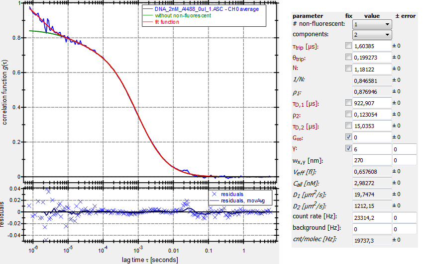
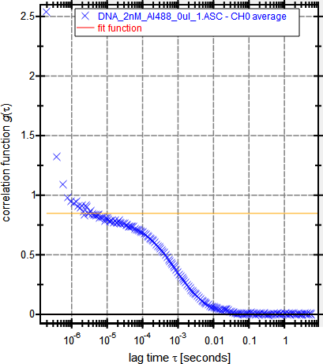
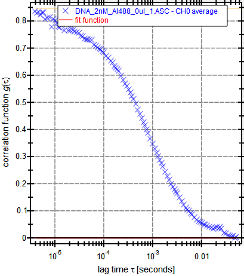
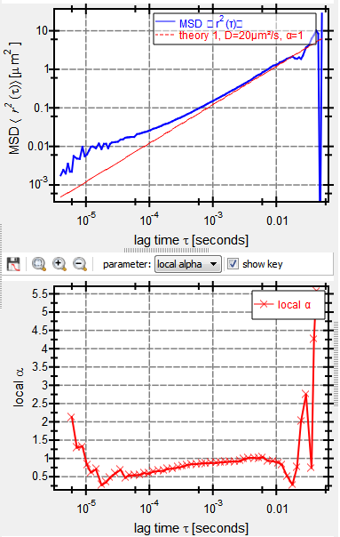
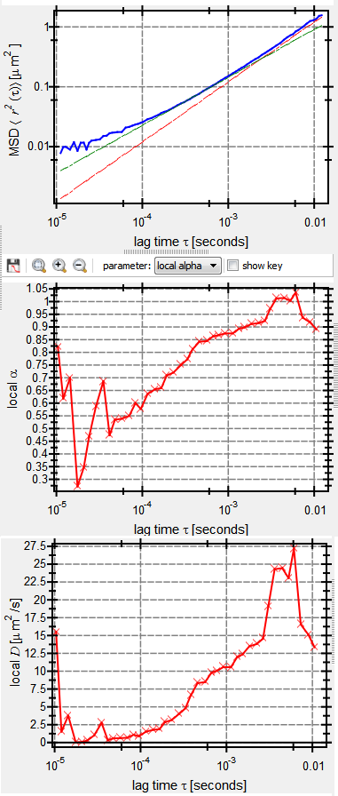

$$qf_commondoc_header.start$$ $$qf_commondoc_header.end$$
The theory used to extract the MSD from a given measured FCS correlation curve is described in the plugin documentation. This page contains a short tutorial on how to extract the MSD from a measured ACF. We will use the example files provided in the directory $$local_plugin_assets$$/testdata/.
- load the FCS measurement DNA_2nM_Al488_0ul_1.ASC which contains the measurement of a DNA fragment.
- create a FCS Curve Fitting evaluation and perform a 2-component fit there which also includes one triplet component. The parameter $$math:\gamma=6$$ and $$math:w_{xy}=270$$ were determined separately. The results should look like this:

- create a MSD evaluation
- select the "FCS: simple 3D model", as the data was extracted from a confocal microscope where diffusion of the molecules was not restricted in any direction. Supply the particle number $$math:N=1.18$$ as extracted from the fit in step #2. also enter the parameter $$math:\gamma=6$$ and $$math:w_{xy}=270$$. The plot of the measured ACF should look like this:

The orange line marks $$math:1/N$$. The first channels (above $$math:1/N$$) mostly contain the triplet and from the last channels where the ACF has already decayed to 0, nothing can be extracted, so we cut the ACF to this region (channels 17..128):

- Now press "Fit Current". The extracted MSD should look like this:

- Still for small ($$math:\tau<10^{-5}$$) and large ($$math:\tau>0.01$$) lag times we get deviations which are especially visible in the local α. To remove them from the plots we can further decrease the displayed part of the MSD with the cut-off below the "local ..." plot. So finally we get:

From these plots we can extract the diffusion coefficient of arounf 20μm2/s for the whole molecule and an anomaliyt of around α=0.8 for the internal motion.